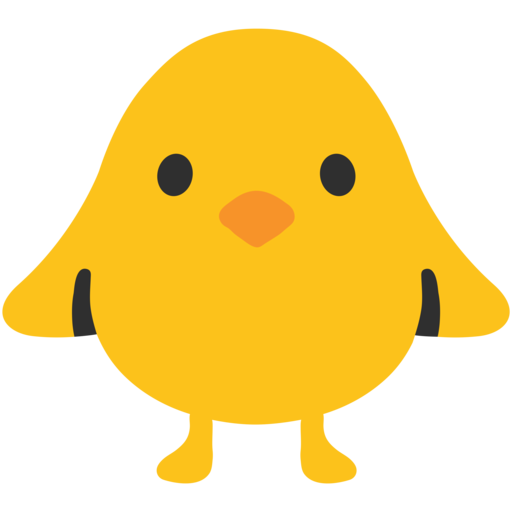

<ion-header>
  <!-- <ion-toolbar>
    <ion-title>animals</ion-title>
  </ion-toolbar> -->
</ion-header>

<ion-content>

  <ion-fab horizontal="start" vertical="top" slot="fixed">
    <ion-fab-button color="dark">
      <ion-icon md="caret-forward" ios="chevron-forward-circle-outline"></ion-icon>
    </ion-fab-button>
    <ion-fab-list side="end">
      <ion-fab-button color="dark">
        <a href="/animals">
          
        </a>
      </ion-fab-button>
      <ion-fab-button color="dark">
        <a href="/colores">
          
        </a>
      </ion-fab-button>
      <ion-fab-button color="dark">
        <a href="/numeros">
          
        </a>
      </ion-fab-button>
    </ion-fab-list>
  </ion-fab>

  <div class="fondo">
    <div class="numeros">
      <ion-grid>
        <ion-row size="6">
          <ion-col size="3" *ngFor="let numero of numeros">
            
          </ion-col>
        </ion-row>
      </ion-grid>
    </div>
  </div>

  <ion-fab horizontal="end" vertical="bottom" slot="fixed">
    <ion-fab-button color="dark">
      <ion-icon md="caret-back" ios="chevron-back-circle-outline"></ion-icon>
      
    </ion-fab-button>
    <ion-fab-list side="start">
      <ion-fab-button color="dark" (click)="cambiarIdioma1()">
        
      </ion-fab-button>
      <ion-fab-button color="dark" (click)="cambiarIdioma2()">
        
      </ion-fab-button>
      <ion-fab-button color="dark" (click)="cambiarIdioma3()">
        
      </ion-fab-button>
    </ion-fab-list>
  </ion-fab>

</ion-content>